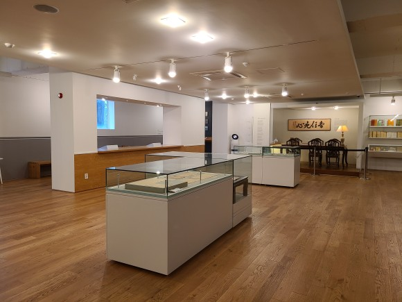

도봉산
서울특별시 도봉구와 경기도 양주시, 의정부시의 접경지대에 있는 산. 서울 북쪽 도봉구와 경기도 양주 경계에 있는 산이다.

플랫폼 창동 61
복합문화공간. 61개의 컨테이너로 구성되 있어서 뒤에 61이 붙어있다.

김수영문학관
1960년 활동한 시인 김수영을 기념하는 문학관

둘리뮤지엄
아이랑 놀기 좋은 박물관.
인원을 정하고 받아 북적거리지도 않는 장소
도봉구 맛집

하이쿠
서울특별시 도봉구 도봉로114길 40 1F
퀄리티 높다는 동네맛집

대문
서울 도봉구 시루봉로 139-6
도봉구 한정식 깔끔하게 먹을 수 있는 난정식

수정궁
서울 도봉구 방학로 173
서울에 느낌있는 만두맛있는곳

트라토리아진
서울 도봉구 도봉로110길 39-16
맛도 좋고 가성비 좋은 파스타전문점

스푼앤포크키친
서울 도봉구 우이천로 483 1층
신선한 재료를 사용하는 양식 맛집

후타츠
서울 도봉구 도봉로110길 9 1층
일본의 맛을 느낄수 있다는 혼밥 소바 맛집